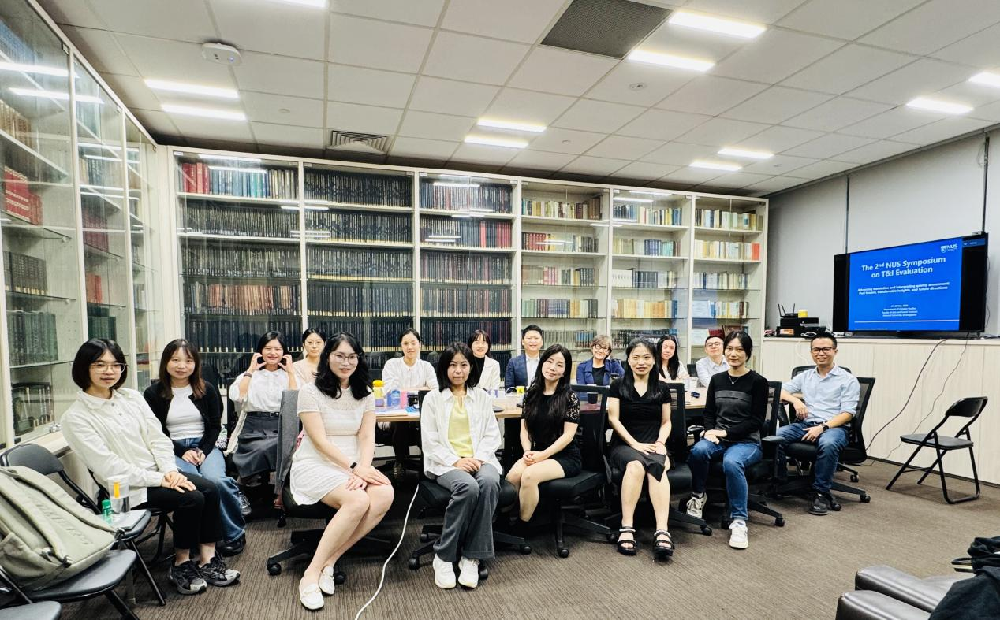

活动概况
中文系于2026年5月21日至22日成功举办The 2nd NUS Symposium on Translation and Interpreting Evaluation，研讨主题为 “Advancing translation and interpreting quality assessment: Past lessons, transferrable insights, and future directions” 学术研讨会。本次会议由韩潮老师(Han Chao, A/P)担任学术召集人。会议聚焦多语言、多模态、多智能体背景下的口笔译质量评估研究（Quality Assessment in Multilingual, Multimodal, and Multiagent Translation and Interpreting/QAM3T&I），与会专家学者就语言测试与口笔译评估领域的最新研究成果展开了深入探讨。

特邀报告人
- 香港浸会大学刘敏华教授
- 美国伊利诺伊大学香槟分校语言学系闫逊教授
- 广东外语外贸大学高级翻译学院陈思佳副教授
- 西安交通大学外国语学院蒋新蕾副教授
- 北京外国语大学高级翻译学院刘宇波副教授
- 厦门大学外文学院陆晓蕾副教授
- 新加坡国立大学中文系韩潮副教授
- 英国赫瑞-瓦特大学语言与跨文化研究学院王小曼助理教授（线上参会）
- 对外经济贸易大学英语学院陈世荣博士
- 美国伊利诺伊大学香槟分校语言学系博士生Rebecca Yeager（线上参会）
- 厦门大学外文学院博士生蒋梦婷、康钰晗、陈琼璐
- 澳门理工大学语言与翻译学院博士生蒋李俐
- 新加坡国立大学中文系博士生姜兆坤
会议日程
点击下方链接查看会议完整日程、报告题目、摘要及报告人信息。
查看会议日程（PDF）